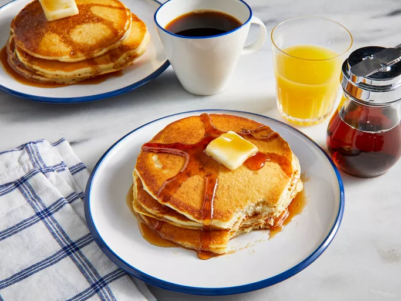
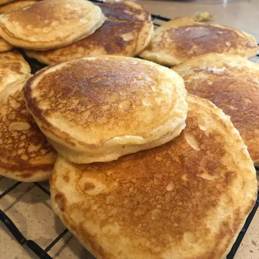

My-Hop Pancakes

Description
These delicious breakfast cakes are said to resemble those from a famous pancake house. When replacing milk for
buttermilk, increase lemon juice to 1 1/2 tablespoons. Serve topped with butter.
Ingredients
Steps
- Gather all ingredients.
- Mix buttermilk, vegetable oil, and vanilla in a bowl; stir in sugar. Whisk in flour, baking powder, baking
soda, and salt, combining the batter with just a few strokes to moisten. Leave the lumps.
- Whisk egg and lemon juice together in a separate bowl; gently stir into the batter. Refrigerate the batter
for at least 30 minutes, up to 1 hour.
- Heat a large skillet over medium heat and grease with the butter. Pour 1/3 cup of batter per pancake into
the skillet and cook until bubbles appear on the surface, about 2 minutes.
- Flip with spatula and brown the other side, about 2 more minutes.
- Enjoy!
